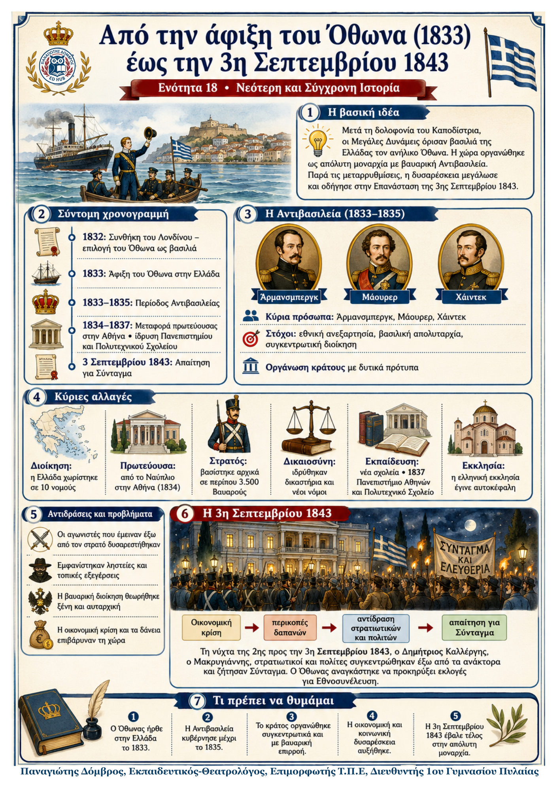

Δεν βρέθηκε η λέξη ή η φράση μέσα στην ενότητα.
1Η βασική ιδέα
Μετά τη δολοφονία του Καποδίστρια, οι Μεγάλες Δυνάμεις επέλεξαν τον 17χρονο Όθωνα ως βασιλιά της Ελλάδας. Το νέο κράτος οργανώθηκε με δυτικά πρότυπα, αλλά ως απόλυτη μοναρχία και με ισχυρό βαυαρικό έλεγχο. Οι μεταρρυθμίσεις στη διοίκηση, τη δικαιοσύνη και την εκπαίδευση συνυπήρχαν με οικονομικά προβλήματα και κοινωνική δυσαρέσκεια. Η πίεση κορυφώθηκε στις 3 Σεπτεμβρίου 1843, όταν ο Όθωνας αναγκάστηκε να υποσχεθεί Σύνταγμα.
2Ιστορικό πλαίσιο
Μετά τη δολοφονία του Καποδίστρια ξέσπασε εμφύλια σύγκρουση. Οι Δυνάμεις επενέβησαν, επειδή φοβούνταν νέα αναταραχή στη νοτιοανατολική Μεσόγειο.
Με τη συνθήκη του Λονδίνου (1832) όρισαν βασιλιά τον Όθωνα, γιο του βασιλιά της Βαυαρίας. Το πολίτευμα ήταν απόλυτη μοναρχία.
Η Ελλάδα έλαβε 20.000.000 φράγκα ως πρώτη δόση δανείου, το οποίο θα έφτανε συνολικά τα 60.000.000 φράγκα.
Επειδή ο Όθωνας ήταν ανήλικος, την εξουσία άσκησε ως το 1835 η Αντιβασιλεία: Άρμανσμπεργκ, Μάουρερ και Χάιντεκ.
3Χρονογραμμή: από την εκλογή του Όθωνα στο Σύνταγμα
| 1832 | Οι Δυνάμεις επιλέγουν τον Όθωνα και καθορίζουν απόλυτη μοναρχία. |
|---|---|
| 1833–1835 | Περίοδος Αντιβασιλείας. Οργανώνεται συγκεντρωτικό κράτος με βαυαρική καθοδήγηση. |
| 1834–1837 | Η πρωτεύουσα μεταφέρεται στην Αθήνα· ιδρύονται Πανεπιστήμιο και Πολυτεχνικό Σχολείο. |
| 1835–1843 | Ο Όθωνας κυβερνά προσωπικά, χωρίς Σύνταγμα. Συνεχίζονται οι αντιδράσεις και οι τοπικές εξεγέρσεις. |
| 3 Σεπ. 1843 | Στρατιωτικοί και πολίτες απαιτούν Σύνταγμα. Ο Όθωνας προκηρύσσει εκλογές για Εθνοσυνέλευση. |
Κεντρική μεταβολή: μέσα σε έντεκα χρόνια, το αίτημα για πολιτική συμμετοχή έγινε ισχυρότερο από την απόλυτη εξουσία. Η 3η Σεπτεμβρίου άνοιξε τον δρόμο για συνταγματική μοναρχία.
4Τα κύρια σημεία
Στόχος της Αντιβασιλείας. Επιδίωξε να δημιουργήσει σύγχρονο εθνικό κράτος κατά τα δυτικά πρότυπα. Το σχέδιό της στηριζόταν σε τρεις αρχές: εθνική ανεξαρτησία, βασιλική απολυταρχία και συγκεντρωτική διακυβέρνηση. Οι βασικές αποφάσεις λαμβάνονταν από την κεντρική εξουσία και όχι από τις παλιές τοπικές κοινότητες.
Διοίκηση και πρωτεύουσα. Το κράτος έγινε συγκεντρωτικό και χωρίστηκε σε 10 νομούς. Το 1834 η πρωτεύουσα μεταφέρθηκε από το Ναύπλιο στην Αθήνα, για να τονιστεί η σύνδεση με την αρχαία Ελλάδα.
Στρατός και αγωνιστές. Ο στρατός στηρίχθηκε αρχικά σε περίπου 3.500 Βαυαρούς. Πολλοί αγωνιστές του 1821 αποκλείστηκαν, έμειναν χωρίς πόρους και ορισμένοι στράφηκαν στη ληστεία.
Δικαιοσύνη και εκπαίδευση. Ιδρύθηκαν δικαστήρια και συντάχθηκαν νέοι νόμοι. Αναδιοργανώθηκαν τα σχολεία και το 1837 ιδρύθηκαν το Πανεπιστήμιο Αθηνών και το Πολυτεχνικό Σχολείο. Η εκπαίδευση των κοριτσιών παρέμεινε παραμελημένη. Η πρωτοβάθμια εκπαίδευση προσφερόταν σε επταετή αλληλοδιδακτικά Δημοτικά σχολεία. Η δευτεροβάθμια οργανώθηκε σε τριτάξια Ελληνικά σχολεία και τετρατάξια Γυμνάσια.
Εκκλησία. Η ελληνική Εκκλησία ορίστηκε αυτοκέφαλη, δηλαδή διοικητικά ανεξάρτητη από το Πατριαρχείο Κωνσταντινούπολης. Παράλληλα, έκλεισαν μονές με λίγους μοναχούς.
Αντιδράσεις. Η βαυαρική διοίκηση προκάλεσε δυσπιστία και εχθρότητα. Εκδηλώθηκαν συνωμοτικές κινήσεις και εξεγέρσεις, όπως στη Μεσσηνία το 1834. Μετά το 1835 ο Όθωνας συνέχισε να κυβερνά χωρίς Σύνταγμα. Ο βασιλιάς προσπάθησε επίσης να περιορίσει την επιρροή των κομμάτων, ενισχύοντας κάθε φορά ένα και περιθωριοποιώντας τα άλλα.
5Πώς αξιολογήθηκε η Αντιβασιλεία;
Ο Μάουρερ τόνισε την αποκατάσταση της τάξης και την ανάπτυξη. Ο Ρούντχαρτ υποστήριξε ότι οι ρυθμίσεις δεν ταίριαζαν στις ανάγκες μιας φτωχής χώρας. Ο Μακρυγιάννης κατήγγειλε την αυταρχική διακυβέρνηση. Οι πηγές δείχνουν ότι το έργο της Αντιβασιλείας είχε και οργανωτικές επιτυχίες και σοβαρές κοινωνικές αντιδράσεις.
6Πώς φτάσαμε στην 3η Σεπτεμβρίου 1843
| Αδυναμία πληρωμής δανείων | → | Ξένος οικονομικός έλεγχος και περικοπές | → | Αντίδραση στρατιωτικών και πολιτών | → | Απαίτηση για Σύνταγμα |
|---|
Τη νύχτα της 2ης προς την 3η Σεπτεμβρίου, δυνάμεις της φρουράς και πολίτες, με επικεφαλής τον Δημήτριο Καλλέργη και τον Μακρυγιάννη, συγκεντρώθηκαν έξω από τα ανάκτορα. Ο Όθωνας υποχρεώθηκε να προκηρύξει εκλογές για Εθνοσυνέλευση, η οποία θα ψήφιζε Σύνταγμα. Έτσι τελείωσε η απόλυτη μοναρχία.
7Τι πρέπει να θυμάμαι
Ο Όθωνας ορίστηκε βασιλιάς το 1832 και έφτασε στην Ελλάδα το 1833.
Η Αντιβασιλεία κυβέρνησε έως το 1835 και οργάνωσε συγκεντρωτικό κράτος.
Οι μεταρρυθμίσεις συνοδεύτηκαν από βαυαρικό έλεγχο και αποκλεισμό πολλών αγωνιστών.
Το 1837 ιδρύθηκαν το Πανεπιστήμιο Αθηνών και το Πολυτεχνικό Σχολείο.
Η οικονομική κρίση, τα δάνεια και οι περικοπές αύξησαν τη δυσαρέσκεια.
Στις 3 Σεπτεμβρίου 1843 ο Όθωνας αναγκάστηκε να δεχτεί τη διαδικασία παραχώρησης Συντάγματος.
